Put a .cube LUT on the card and the fp turns it into settings for its own colour hardware. The look appears on the screen and is recorded into JPG and MOV; DNG and CinemaDNG stay RAW. You pick it in the camera's own COLOR list, next to the stock modes.
把 .cube LUT 放進卡，fp 會把它轉成相機自己色彩硬體的設定。 螢幕上看得到，JPG 與 MOV 也會套用；DNG 與 CinemaDNG 仍是 RAW。 在相機原本的 COLOR 清單裡選用，和原廠色彩模式並列。
Tick LUT in fpSup-Merge. COL-Share, which adds the rows to the COLOR list, comes with it automatically. Download and put the files on the card as the Merge page says.
在 fpSup-Merge 勾選 LUT。負責在 COLOR 清單加列的 COL-Share 會自動附上。下載後照 Merge 頁的說明放進卡。
Make the LUT from an fp DNG in DaVinci Resolve. Whatever Color Space and Gamma you decode the DNG with in Camera Raw, set the same two in the camera (step 4), and the camera feeds the LUT the same picture Resolve did — so it matches what you saw. The example below uses P3 D60 / Linear; any pair the camera lists works.
用 fp 的 DNG 在 DaVinci Resolve 裡做 LUT。Camera Raw 用什麼 Color Space 和 Gamma 解碼， 相機上（第 4 步）就設同樣兩項，相機送進 LUT 的畫面就和 Resolve 一樣，看到的結果也就一致。 下面的例子用 P3 D60 / Linear；相機清單裡有的組合都可以。
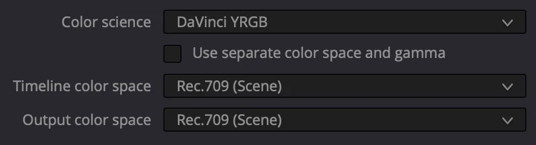
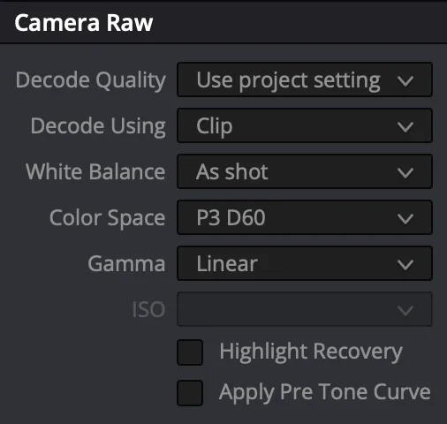
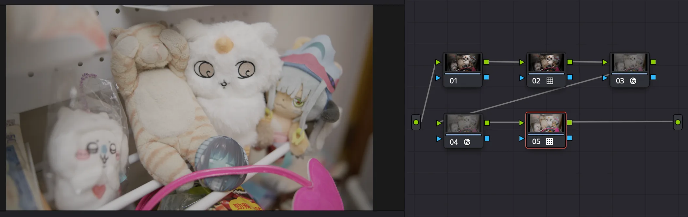
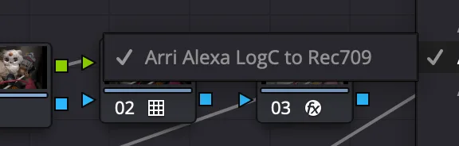
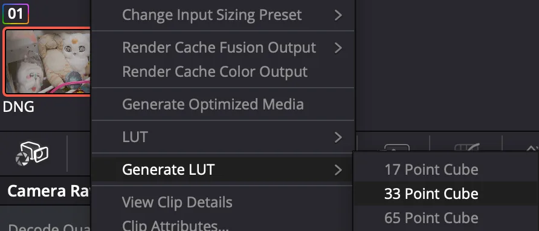
Optional, for LUT authors. Two comment lines near the top of the .cube tell the camera which input the LUT expects, so the user does not have to set it. For P3 D60 / Linear:
選用，給 LUT 作者。在 .cube 開頭附近加兩行註解，告訴相機這支 LUT 要的輸入，用戶就不必自己設。 以 P3 D60／Linear 為例：
# FPSUP_INPUT_COLOR_SPACE p3-d60
# FPSUP_INPUT_GAMMA linearOther values — colour space: aces adobe-rgb blackmagic-design
p3-d60 p3-d65 rec2020 rec709 srgb; gamma: adobe-rgb
gamma24 gamma26 linear rec709 srgb blackmagic-film
blackmagic-extended-video.
其他可用的值 —— 色域：aces adobe-rgb blackmagic-design
p3-d60 p3-d65 rec2020 rec709 srgb；Gamma：adobe-rgb
gamma24 gamma26 linear rec709 srgb blackmagic-film
blackmagic-extended-video。
Copy the files into \fpSup\LUT\. Only .cube files directly in that folder are read.
The COLOR list shows the first 8 characters of the file name, so keep names short
(ARRI_709.cube, Fuji_3513.cube).
把檔案複製到 \fpSup\LUT\。只讀這個資料夾裡（不含子資料夾）的 .cube。
COLOR 清單只顯示檔名的前 8 個字，名字取短一點（ARRI_709.cube、Fuji_3513.cube）。
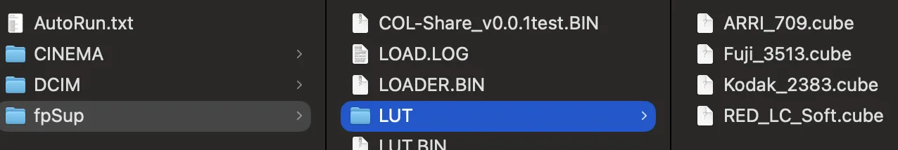
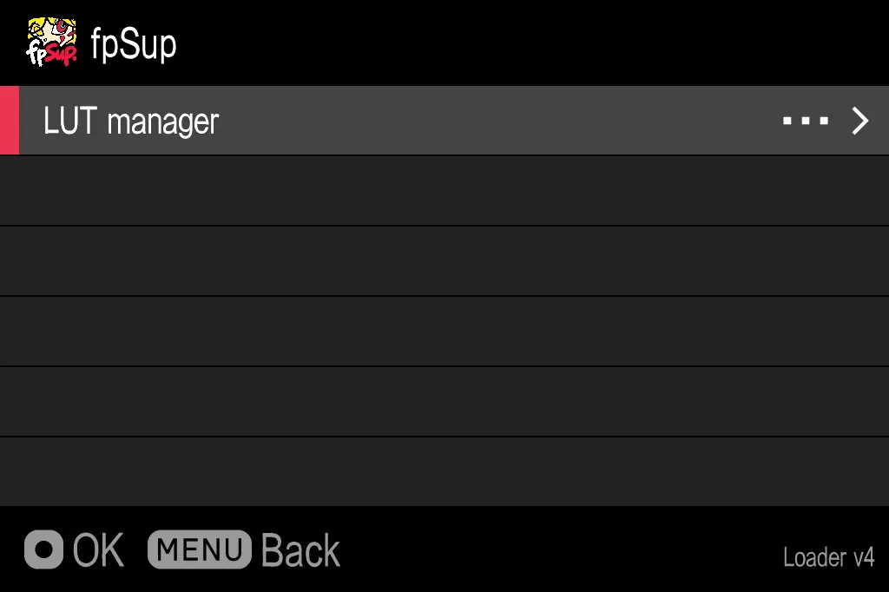
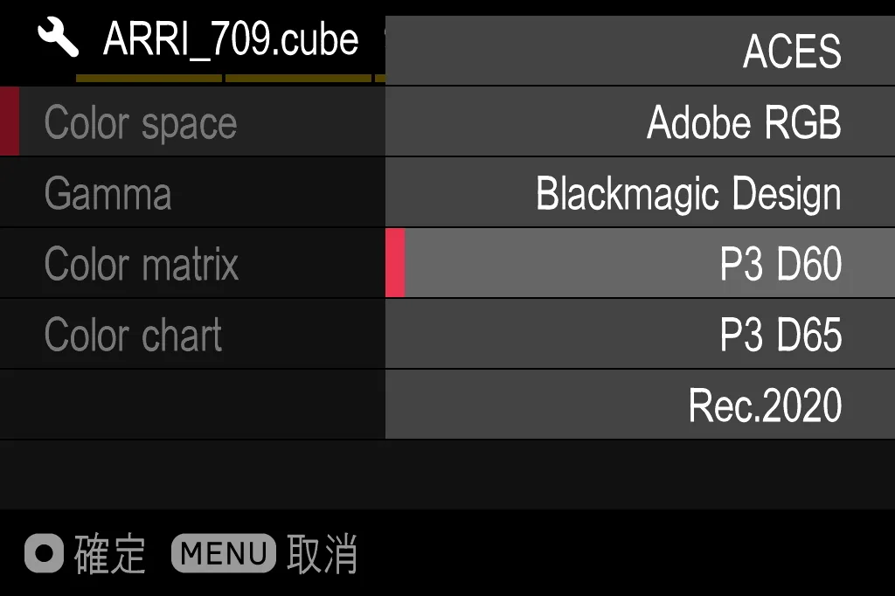
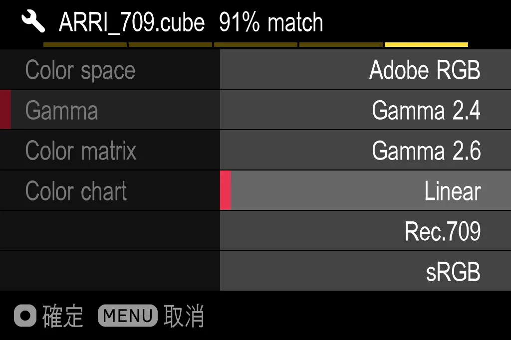
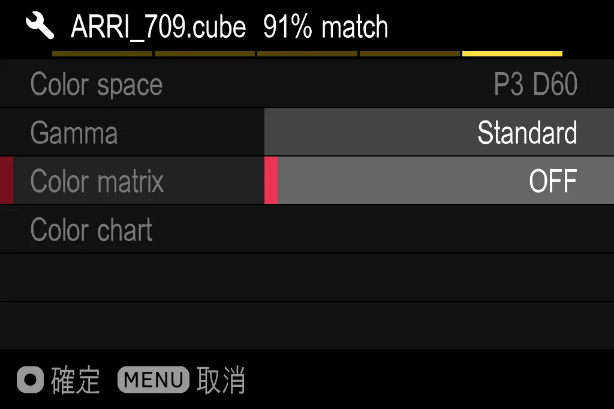
Press MENU to go back to the list.
按 MENU 回到清單。
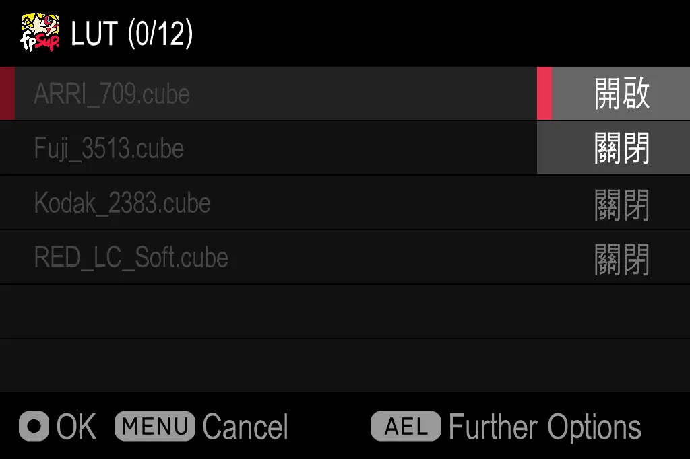
\fpSup\LUTDATA\, and the Further Options title then shows the match
(e.g. ARRI_709.cube 91% match).第一次開啟會轉檔。
色卡每一格的上半是 cube 的顏色、下半是相機做出來的顏色，Match 是兩者的接近程度。等它跑完。
只需要轉一次：結果存在 \fpSup\LUTDATA\，之後「更多選項」的標題會顯示相符度（例如 ARRI_709.cube 91% match）。
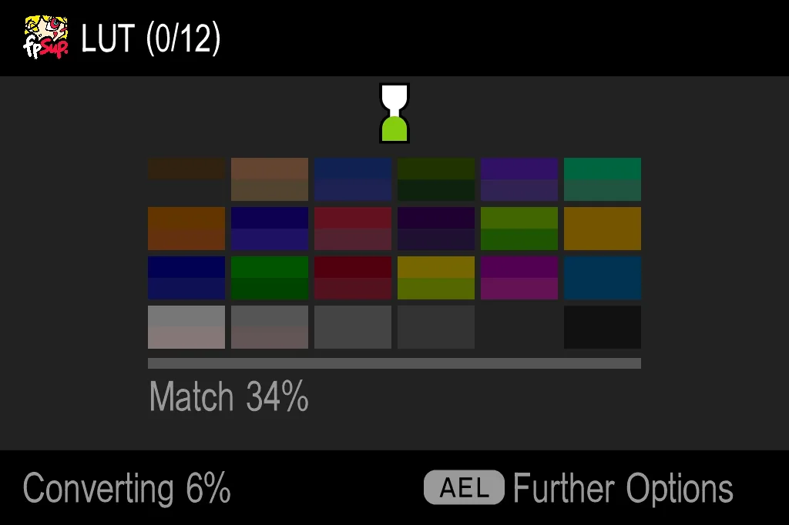
Changed Color space, Gamma or Color matrix later? The LUT converts again. Color chart in Further Options shows the last conversion's chart again.
之後改了 Color space、Gamma 或 Color matrix，LUT 會重新轉檔。「更多選項」裡的 Color chart 可以再看一次上次轉檔的色卡。
Open the camera's COLOR list as usual: every LUT that is on is a tile right after OFF, named after its file. Pick it like any colour mode. It applies to the live view, to JPG and to MOV. DNG and CinemaDNG are still RAW — grade them in Resolve with the same LUT.
照平常打開相機的 COLOR 清單：每支已開啟的 LUT 都是接在 OFF 後面的一格，名字取自檔名。 像選色彩模式一樣選它。即時畫面、JPG、MOV 都會套用。DNG 與 CinemaDNG 仍是 RAW —— 在 Resolve 裡套同一支 LUT 調色。
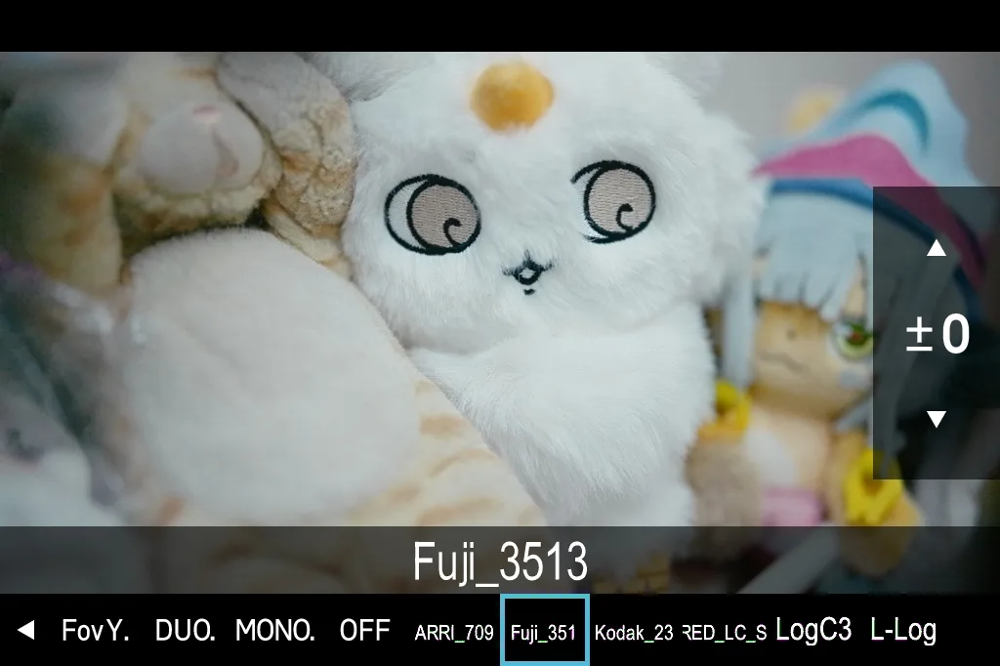
\fpSup\LUTDATA\? The camera notices after the next restart; then turn the LUT on to convert again.
刪了 \fpSup\LUTDATA\？相機要重開機後才會發現；之後把 LUT 開啟就會重新轉檔。Delete \fpSup\LUT_v*.BIN, \fpSup\UI\COLOR.BIN and the LUT and
LUTDATA folders (and the COL-Share file if nothing else uses it), then restart. LUT keeps nothing in the
camera's own settings. More on removing.
刪掉 \fpSup\LUT_v*.BIN、\fpSup\UI\COLOR.BIN 以及 LUT、LUTDATA
兩個資料夾（沒有其他功能在用的話，COL-Share 的檔案也可以刪），然後重開機。LUT 不在相機自己的設定裡存任何東西。
移除的詳細說明。
| what happens發生什麼 | what to do怎麼辦 |
|---|---|
| No LUT manager on the fpSup pagefpSup 頁沒有 LUT manager | The card did not load LUT; see general problems. 卡沒有載入 LUT；見一般問題。 |
| My .cube is not in the list清單裡沒有我的 .cube | It must be directly in \fpSup\LUT\ and end in .cube.
要直接放在 \fpSup\LUT\，副檔名是 .cube。 |
| The LUT is on but not in the COLOR listLUT 開了，COLOR 清單卻沒有 | COL-Share is missing: get the card again from fpSup-Merge. 少了 COL-Share：從 fpSup-Merge 重新下載。 |
| Brighter or darker than in Resolve比 Resolve 裡亮或暗 | Compare with Resolve at Camera Raw Exposure 0: that is what the camera shows (step 2). 在 Resolve 用 Camera Raw 曝光 0 來比對，那才是相機上的樣子（第 2 步）。 |
| Colours off, low Match顏色不對、Match 偏低 | Check Color space, Gamma and Color matrix under AEL → Further Options. 檢查 AEL → 更多選項 裡的 Color space、Gamma、Color matrix。 |
| The camera does not respond相機沒反應 | Take the battery out (USB unplugged). Bring what you saw to the Discord.把電池拿出來（不插 USB 線）。 把你看到的情況帶到 Discord。 |
And if anything is wrong, it's definitely AI's fault.
如果有哪裡不對，那一定是 AI 的錯。